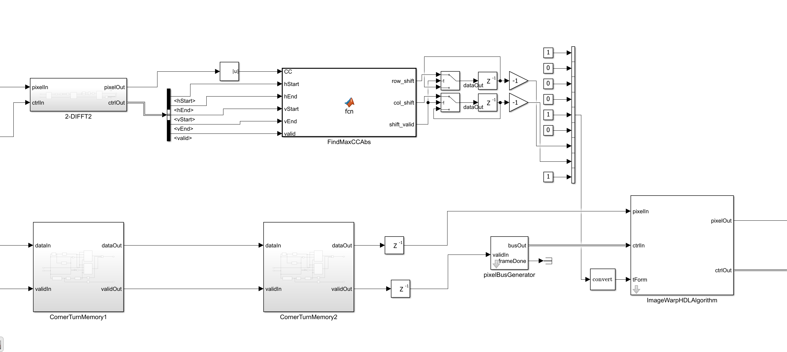
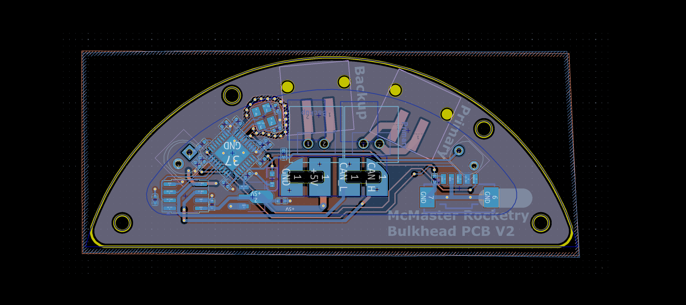
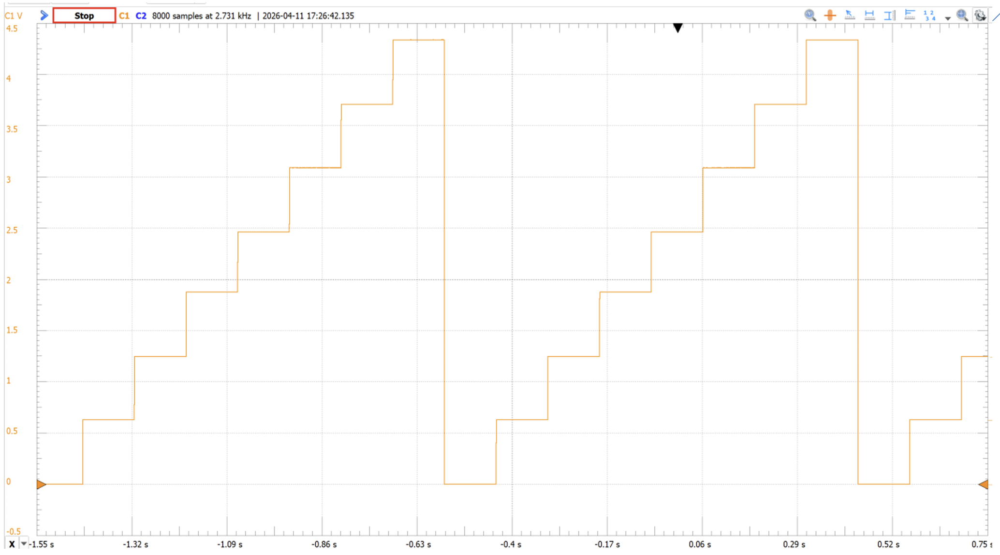
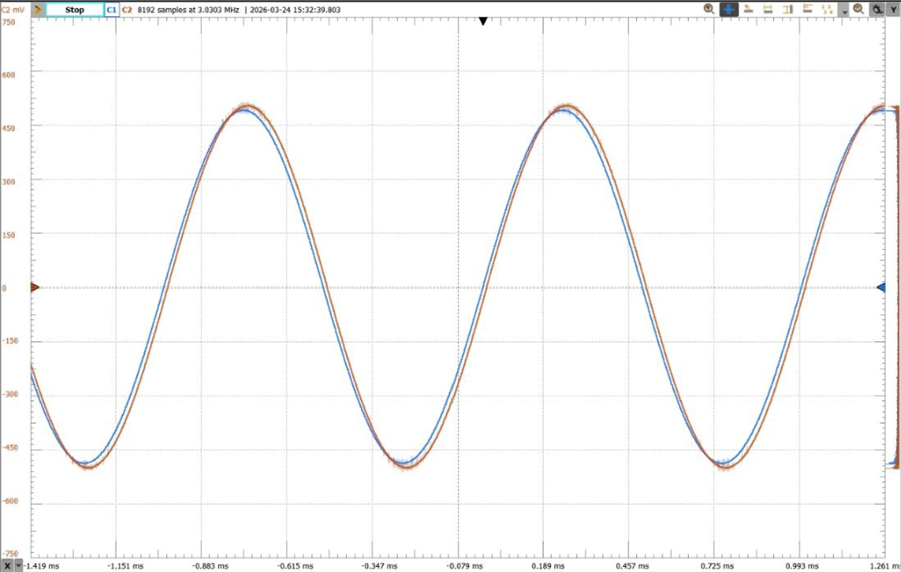
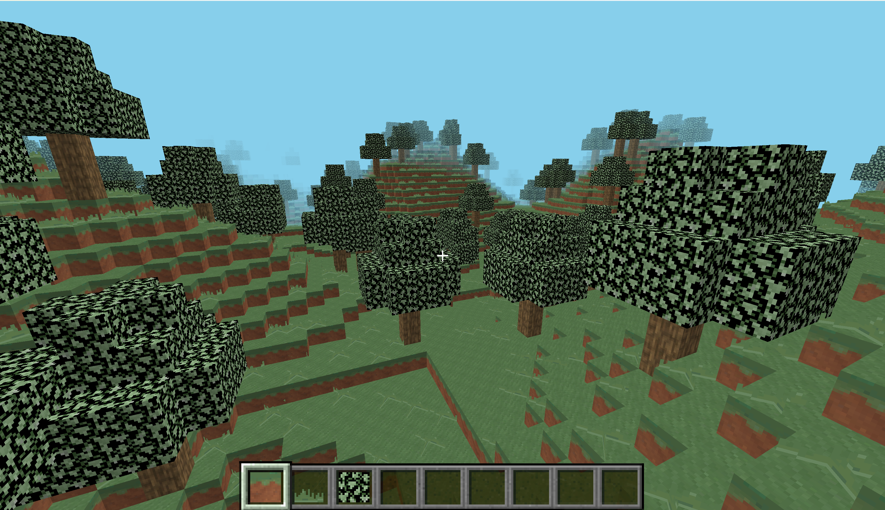

Hey, I'm John3RD YEAR COMPUTER ENGINEERING STUDENT
Student at McMaster University passionate about designing hardware and software.
Selected Work
My Hardware Work
Click each card for a more detailed description.
Video

ResearchMay 2026 – Present
DSP Digital Design Research Assistant @ HADI Lab
Designing a streaming hardware accelerator for the motion-correction stage of CaImAn, the calcium-imaging analysis pipeline. Building a fixed-point 2D FFT/IFFT datapath and DFT-registration engine in Simulink's Vision HDL Toolbox so neuron activity can be tracked fast enough for closed-loop feedback.
SimulinkVision HDL Toolbox2D FFTFixed-PointMATLAB
Video

Technical TeamJan 2026 – Aug 2026
Controls Subteam @ McMaster Rocketry
Designing PCBs in KiCAD for the competition rocket's bulkhead including parachute deployment detection and CAN bus integration under a 10cm diameter constraint, and researching STM32 F1 JTAG daisy-chain flashing for a 33,551 ft apogee target.
Architected a 5-stage pipelined RV32I CPU core in SystemVerilog with hazard detection, forwarding, pipeline flushing, and 2-bit dynamic branch prediction. Deployed on a Tang Nano 20K FPGA at 54MHz with memory-mapped GPIO/SPI and wrote drivers for a SPI LCD.
SystemVerilogRISC-VFPGAModelSim

ProjectApr 2026
3-Bit Digital-to-Analog Converter
Designed a binary-weighted DAC using summing and inverting op-amps to convert 3-bit digital inputs into a linear 0–5V analog output, then measured gain error, differential non-linearity, and offset error against calculated and expected values.
Designed and proved a transistor-level CMOS XOR gate from first principles, built it on a breadboard with CD4007CN MOSFETs, and characterized VH/VL, propagation delay, and rise/fall time against a 12-transistor conventional design and a pass-transistor alternative.
CMOSTransistorsOscilloscope

ProjectMarch 2026
Transistor Amplifier
Designed a Common Collector BJT buffer amplifier targeting unity gain with less than 10% attenuation, deriving component values by hand, validating in LTSpice, and confirming midband gain and linearity on the bench with an oscilloscope and spectrum analyzer.
BJTLTSpiceCommon Collector
Selected Work
My Software Work
Click each card for a more detailed description.
Video

ProjectApr 2022 – Aug 2022
3D OpenGL Minecraft Clone
Developed a 3D voxel game in C++ using OpenGL, with modular OOP subsystems, GLSL shaders for fog and texture-atlas mapping, and optimisations (batched rendering, frustum/face culling) improving framerate by 250%.
Wrote C firmware on an ARM Cortex-M4 to read I2C LiDAR sensor data, plus a Python UART tool to log and visualize readings as a 3D scatter plot, with full hardware datasheet documentation.
CCortex-M4I2CPython
Get In Touch
Contact Me
Open to co-op and internship opportunities, reach out any time.